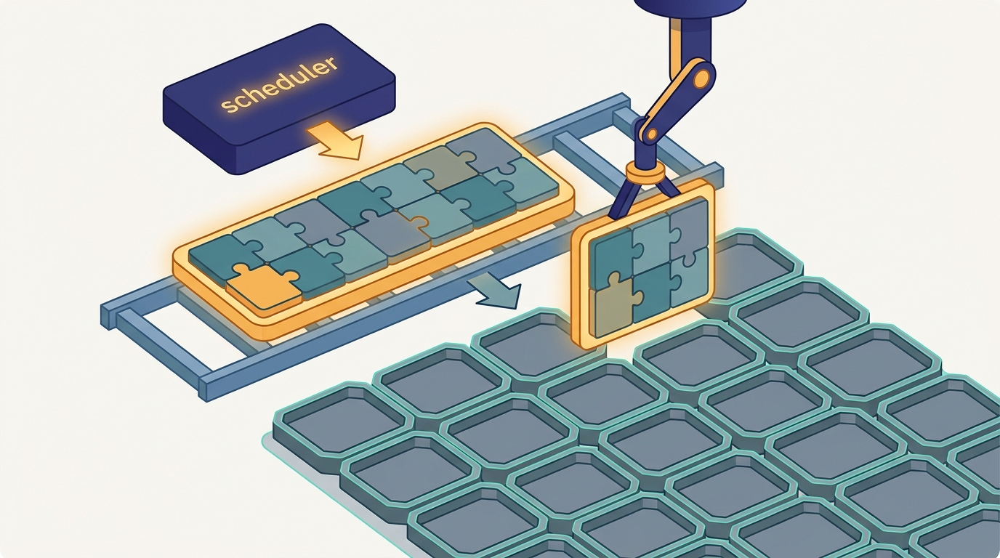

"I have held my partial gradient at the barrier for ninety seconds now. The scheduler placed seven of us. It is still hunting for slot eight. I cannot finish the all-reduce, so the seven of us who did get GPUs are burning them on nothing."
A Worker, Idling Because Worker 7 Has No Slot Yet

A synchronous parallel job is not a bag of independent tasks the scheduler can start whenever a slot frees up; it is a single organism whose every rank blocks on a collective that only completes when all of them are running, so the cluster must place them all at once or not at all, and place them where their collective traffic stays cheap. The previous section gave us schedulers that pack tasks onto nodes to maximize utilization. That packing logic, applied naively to a data-parallel or model-parallel training job, produces two failure modes that have no analogue in batch computing: a partial placement that deadlocks because the all-reduce blocks on a rank that was never started, and a scattered placement that runs but crawls because every gradient exchange crosses the slowest links in the cluster. This section fixes both. Gang scheduling makes placement all-or-nothing; collective-aware placement makes it topology-aware, mapping the ring or tree from Chapter 4 onto the physical fabric so the ranks that talk most sit closest.
Every scheduler in Section 33.4 shared an implicit assumption inherited from decades of batch computing: a job is a set of tasks, and a task can run as soon as a slot is available for it. Tasks that wait a little longer for resources simply finish a little later; nothing breaks. That assumption is exactly false for the synchronous parallel jobs of Chapter 15 and Chapter 16. A data-parallel training step ends with an all-reduce over every rank, and that all-reduce is a barrier: no rank advances to the next step until all of them have contributed and received the summed gradient. If the scheduler starts seven of the eight ranks and leaves the eighth queued, the seven do not run seven-eighths as fast. They run for one step, hit the all-reduce, and stop, holding GPUs that compute nothing while they wait for a rank the scheduler may not place for minutes. The job is not slow; it is deadlocked, and it is wasting seven accelerators to do it. Resolving this clash between batch-scheduler instincts and collective-communication reality is the whole subject of this section.
1. The All-or-Nothing Failure Mode Beginner
To see why partial placement is fatal rather than merely suboptimal, recall the structure of a synchronous step. Each of $K$ workers computes a partial gradient on its shard, then the workers run an all-reduce to sum and average those partials, and only then does each worker apply the update and begin the next step. The all-reduce is a collective: it has a well-defined result only when all $K$ ranks participate. An all-reduce implemented as a ring (the bandwidth-optimal scheme of Chapter 4) passes a chunk from rank $k$ to rank $k+1$ around the full circle; if rank 7 never starts, the chunk that must pass through it never arrives, and every other rank blocks forever at the receive. A tree all-reduce has the same property: a missing leaf or a missing internal node stalls the reduction that depends on it.
This is the precise opposite of an embarrassingly parallel batch job, where starting 7 of 8 mappers simply means the eighth result arrives later and the job still completes. The synchronous collective converts "later" into "never" and converts idle waiting into active resource waste. Figure 33.5.1 contrasts the two situations: the same eight-rank job, fully placed and progressing, versus partially placed and deadlocked at the barrier.
A batch job placed at fraction $f$ of its tasks makes roughly fraction $f$ of its progress. A synchronous collective job placed at fraction $f < 1$ makes zero progress and wastes the $f$ it did place, because the barrier blocks on the missing ranks. The scheduling unit for such a job is therefore the whole rank group, not the individual rank. Either all ranks run together or none should run at all; anything in between is pure waste plus a risk of cluster-wide deadlock when many partial jobs each hold some GPUs and wait for the rest.
2. Gang Scheduling: All-or-Nothing Co-Scheduling Beginner
The remedy is gang scheduling: treat the $K$ ranks of a synchronous job as one indivisible scheduling unit, a gang, and admit it only when $K$ slots can be granted simultaneously. The scheduler never starts a strict subset of a gang. Until all $K$ slots are available the gang waits in the queue, holding nothing; the instant they are available it launches the whole gang at once. This single rule eliminates both the deadlock (no rank ever blocks on a never-started peer) and the resource waste (no GPU is ever held by a rank that cannot make progress).
Gang scheduling is implemented as an admission test layered on top of the bin-packing schedulers of the previous section. Conceptually the scheduler computes, for each waiting gang, whether the cluster currently has $K$ free slots that satisfy the gang's placement constraints; if yes it commits all $K$ atomically, if no it leaves the gang pending and considers the next one. The subtlety is avoiding a livelock in which several large gangs each repeatedly grab a few slots, release them when the full count fails to materialize, and starve. Production gang schedulers solve this with reservation or backfill: a large gang accumulates a reservation of slots that smaller jobs may backfill only if they will release before the reservation completes, guaranteeing the gang eventually launches.
Who: An ML platform engineer operating a shared 512-GPU training cluster for a research lab.
Situation: A flagship 256-GPU pretraining job was submitted to a queue shared with dozens of small interactive jobs, under a plain task-level scheduler.
Problem: The big job's ranks were admitted piecemeal as small jobs finished; it would acquire 180 GPUs, sit at the first all-reduce barrier, and burn them for twenty minutes while waiting for the remaining 76, then a small job would preempt a rank and collapse the whole thing.
Dilemma: Carve out a static 256-GPU reservation, wasting capacity whenever the big job was not running, or keep the shared pool and accept the deadlocks and wasted GPU-hours.
Decision: Neither; they enabled gang scheduling so the 256-rank job became one atomic unit that would launch only when all 256 slots were free, with backfill letting short jobs fill the gaps until then.
How: They wrapped the job in a Volcano PodGroup with minMember: 256, so Kubernetes admitted all 256 pods together or none, and short jobs backfilled the reservation.
Result: Wasted GPU-hours from half-started runs fell to zero, the big job's queue wait became predictable, and shared-pool utilization stayed high because backfill kept the gaps productive.
Lesson: The fix for a synchronous job thrashing in a task scheduler is not a static reservation; it is to make the scheduler aware that the ranks are one gang.
Three families of scheduler implement this idea, each in the idiom of its world. In Kubernetes, the Volcano batch scheduler introduces the PodGroup with a minMember field; Volcano holds the group's pods in a pending state and binds them only when minMember nodes are simultaneously available, which is gang scheduling expressed as a custom scheduler plugin. In the HPC world, Slurm has long allocated a job an entire set of nodes atomically through salloc or sbatch -N, and its preemption and time-slicing machinery (historically marketed as "gang scheduling") co-schedules and co-suspends the ranks of a job together so they advance in lockstep. ML-native schedulers such as the one built into Ray express the same constraint through placement groups with a STRICT_PACK or bundle reservation that the autoscaler must satisfy as a unit before any actor starts. Code 33.5.1 shows the Volcano specification side by side with the Slurm and Ray equivalents so the shared all-or-nothing semantics are visible across the three idioms.
# Volcano (Kubernetes): a PodGroup is the gang. minMember=8 means the
# scheduler binds all 8 pods together or leaves them all pending.
apiVersion: scheduling.volcano.sh/v1beta1
kind: PodGroup
metadata:
name: ddp-train
spec:
minMember: 8 # all-or-nothing: 8 ranks co-scheduled
queue: gpu-training
minResources:
nvidia.com/gpu: "8" # the gang needs 8 GPUs at once
PodGroup. minMember: 8 is the all-or-nothing rule: Volcano admits the eight ranks together or holds them all in the queue, never a partial subset.# Slurm (HPC): one allocation request for all ranks at once. Slurm grants
# the whole node set atomically; the job never starts on a partial set.
sbatch --nodes=8 --ntasks-per-node=1 --gpus-per-task=1 \
--gres=gpu:1 --exclusive train_ddp.sbatch
# Ray (ML-native): a placement group reserves all 8 bundles as a unit;
# actors are created only after every bundle is committed by the autoscaler.
# pg = placement_group([{"GPU": 1}] * 8, strategy="STRICT_PACK")
# ray.get(pg.ready()) # blocks until all 8 GPUs are reserved together
The cost of gang scheduling is queueing delay: a gang waits until its full width is free, which can be longer than the wait for any single rank, and the cluster may sit with a few idle GPUs that no waiting gang is small enough to use. This is the deliberate trade of Chapter 4's barrier semantics surfacing at the scheduler: we accept some scheduling-time idleness to eliminate the far costlier run-time idleness of a deadlocked barrier. The connection to stragglers from earlier chapters is direct; where Chapter 18 mitigated a slow rank inside a running job, gang scheduling prevents the structural straggler of a rank that is not running at all.
3. The Cost of Topology-Oblivious Placement Intermediate
Gang scheduling guarantees the ranks all run; it says nothing about where. A gang scheduler that grants eight GPUs scattered one-per-rack satisfies the all-or-nothing rule while routing every byte of every all-reduce across the cluster spine, the slowest and most contended links in the fabric. To quantify the damage we need the cost model of the collective. From Chapter 4, a bandwidth-optimal ring all-reduce of a message of $M$ bytes over $K$ ranks moves
$$T_{\text{ring}} = 2(K-1)\,\alpha + \frac{2(K-1)}{K}\cdot\frac{M}{B},$$where $\alpha$ is the per-hop latency and $B$ is the per-link bandwidth. The term that dominates for the large gradient buffers of training is the bandwidth term $\frac{2(K-1)}{K}\cdot\frac{M}{B}$, and the effective $B$ is not a single number: it is set by the slowest link the ring traverses. Inside an NVLink island, $B$ might be hundreds of gigabytes per second; across a leaf switch, tens; across the rack spine, a few. Placing one ring hop on a spine link does not slow that hop alone, it throttles the whole ring to the spine's bandwidth, because the ring advances in lockstep through its slowest segment.
A useful proxy for this effect is the bisection bandwidth and the hop count of the placement. If we assign each level of the hierarchy a relative cost (1 for an intra-island NVLink hop, a few times that for an intra-rack leaf hop, an order of magnitude more for a cross-rack spine hop), the total ring cost is the sum of the per-hop costs around the ring, and a placement that keeps the ring inside one island pays the floor while a placement that scatters across racks pays many spine crossings. The number of cross-rack links a placement induces is a direct, countable estimator of how badly it will run. Code 33.5.2 computes exactly this for a good and a bad placement of the same eight-rank gang on a 32-GPU cluster.
# Cluster: 4 racks x 2 leaf-switch islands x 4 GPUs = 32 GPUs.
# Relative hop cost: same island (NVLink)=1, same rack=4, cross-rack spine=16.
RACKS, ISLANDS_PER_RACK, GPUS_PER_ISLAND = 4, 2, 4
def coord(gpu): # (rack, island) of a global GPU id
within = gpu % (ISLANDS_PER_RACK * GPUS_PER_ISLAND)
return gpu // (ISLANDS_PER_RACK * GPUS_PER_ISLAND), within // GPUS_PER_ISLAND
def hop_cost(a, b):
ra, ia = coord(a); rb, ib = coord(b)
return 16 if ra != rb else (4 if ia != ib else 1)
def ring_cost(p): # sum of hop costs around the all-reduce ring
return sum(hop_cost(p[i], p[(i + 1) % len(p)]) for i in range(len(p)))
def cross_rack_links(p):
return sum(1 for i in range(len(p))
if coord(p[i])[0] != coord(p[(i + 1) % len(p)])[0])
good = [0, 1, 2, 3, 4, 5, 6, 7] # packed into 2 islands of rack 0
bad = [0, 4, 8, 12, 16, 20, 24, 28] # one rank per island, scattered
for name, p in (("topology-aware", good), ("topology-oblivious", bad)):
print(f"{name:18} ring_cost={ring_cost(p):3} cross_rack_links={cross_rack_links(p)}")
print(f"slowdown factor (ring cost): {ring_cost(bad) / ring_cost(good):.1f}x")
topology-aware ring_cost= 14 cross_rack_links=0
topology-oblivious ring_cost= 80 cross_rack_links=4
slowdown factor (ring cost): 5.7xThe lesson of Output 33.5.2 is that gang scheduling and topology-awareness are separate, both necessary conditions. The scattered gang is fully placed, never deadlocks, and reports healthy GPU utilization in every dashboard, yet it wastes most of every training step on spine traffic that a packing-aware scheduler would have avoided for free. Because the slowdown compounds across millions of steps in a long pretraining run, a one-time placement decision that costs nothing to make correctly translates into weeks of wall-clock and a proportional cloud bill.
4. Collective-Aware Placement: Mapping the Ring onto the Fabric Advanced
Collective-aware (equivalently, topology-aware) placement closes this gap by treating the physical interconnect hierarchy as a first-class input to the placement decision. The rule is simple to state: the ranks that all-reduce together should sit as close as the fabric allows, packed into the smallest enclosing unit of the hierarchy that fits, so the collective's communication graph maps onto fast links and the slow links carry as little of it as possible. An eight-rank gang on the cluster of Output 33.5.2 should occupy two adjacent islands of one rack, not eight islands of four racks. The ring's logical neighbor relation (rank $k$ talks to $k+1$) should be laid onto the physical neighbor relation (GPU on the same NVLink switch) so that consecutive ring hops are the cheapest hops in the building.
This is the scheduler-side companion of a fact established in Chapter 4: hierarchical collectives are fastest when the algorithm's tree or ring matches the hardware's tree or ring. There the responsibility lay with the collective library (NCCL builds rings and trees that respect detected NVLink and switch topology). Here the responsibility lies one level up, with the scheduler that decides which physical GPUs the library will even see. A perfectly topology-aware NCCL ring is wasted if the scheduler handed it eight GPUs in eight different racks; conversely, a topology-aware scheduler hands the library a compact set of GPUs on which it can build a cheap ring. The two cooperate, and Figure 33.5.2 shows the same gang under both a topology-oblivious and a topology-aware placement on the rack hierarchy.
Production schedulers express collective-awareness through topology constraints rather than raw GPU lists. Volcano and the Kubernetes scheduler read node labels that encode rack and switch membership and support affinity rules that ask the scheduler to pack a PodGroup within a single zone or rack. Slurm models the fabric explicitly with its topology.conf, describing the switch hierarchy so that its topology plugin allocates a job the most compact set of nodes under a common switch. Specialized training stacks go further and pass the desired rank-to-GPU mapping directly, so that the collective library's ring index matches the physical adjacency. In all cases the scheduler is solving a placement problem whose objective is the ring cost of Output 33.5.2, minimized over the choice of which physical slots fill the gang.
Without scheduler support, mapping a ring onto the fabric means querying every node's switch label, solving a compact-packing problem by hand, and pinning each rank to a chosen GPU through environment variables and a custom rank file, easily a hundred lines that go stale the moment the cluster changes. Volcano collapses this to a single topology-aware policy on the gang:
# Ask Volcano to keep the whole gang under one network zone (rack/leaf),
# so the collective library builds its ring on fast links only.
apiVersion: scheduling.volcano.sh/v1beta1
kind: PodGroup
metadata:
name: ddp-train
spec:
minMember: 8
networkTopology: # topology-aware placement policy
mode: hard # refuse to scatter across zones
highestTierAllowed: 2 # stay within a leaf/rack tier
This section is where the cluster-coordination axis of Section 1.1 earns its place in the six-axis map. Scale-out only pays when the machines act as one, and a synchronous parallel job is the sharpest test of that: the all-reduce primitive of Chapter 4 dictates not just how the workers compute (Chapter 15) but how the cluster must schedule and place them. Gang scheduling is the barrier's demand on the scheduler; collective-aware placement is the bandwidth model's demand on the scheduler. The same primitive that made data parallelism exact in Section 1.1 reaches all the way down to which physical GPU each rank runs on. Coordinating the cluster is not a separate concern bolted on after the algorithm; it is the algorithm's communication structure, surfaced at the infrastructure layer.
5. Beyond Data Parallelism: Heterogeneous Collective Topologies Advanced
Real large-model jobs are not a single ring. The 3D-parallel training of Chapter 16 overlays several collective groups with sharply different traffic intensities on the same set of GPUs: a tensor-parallel group that all-reduces activations on every layer (very high bandwidth, very frequent), a data-parallel group that all-reduces gradients once per step (high volume, less frequent), and a pipeline-parallel group that passes activations point-to-point between stages (lower volume). Collective-aware placement for such a job is no longer "pack the gang"; it is a mapping problem that assigns the most bandwidth-hungry group, tensor parallelism, to the fastest tier (one NVLink island), the data-parallel group to the next tier (within a rack), and pipeline stages, which tolerate slower links, across racks.
The objective generalizes Output 33.5.2's single ring cost to a weighted sum of per-group ring costs, each weighted by how often and how much that group communicates. Writing $w_g$ for the traffic weight of group $g$ and $C_g(\pi)$ for the ring cost of group $g$ under a placement $\pi$, the topology-aware scheduler seeks
$$\pi^\star = \arg\min_{\pi}\ \sum_{g}\, w_g\, C_g(\pi),$$subject to the gang constraint that the union of all groups is co-scheduled. The tensor-parallel group's weight $w_g$ is the largest by far, which is why every production recipe pins tensor parallelism inside a single node: the scheduler should never let a tensor-parallel ring cross even a leaf switch, while it can afford to scatter the pipeline dimension across the building. This nested-collective placement is the scheduling counterpart of the 3D-parallelism trade-offs analyzed in Chapter 16, and it is why the placement and the parallelism plan must be designed together rather than in sequence.
The hand-tuned recipes above are giving way to schedulers that compute the placement automatically. Production systems now expose explicit fabric topology to the scheduler: NVIDIA's Topology-Aware scheduling for Kubernetes and the Slinky project bringing Slurm-style topology allocation into Kubernetes both let the gang request placement within a named NVLink domain or rack tier. On the algorithm side, work in the lineage of frameworks like Alpa and Galvatron searches the joint space of parallelism strategy and device placement, treating the rank-to-GPU map as a variable co-optimized with the parallelism plan rather than fixed afterward. A parallel thread targets the largest fabrics: rail-optimized and topology-aware collective scheduling for GPU superclusters reorders the ranks within a collective to match rail and switch structure, and reconfigurable optical interconnects let the topology itself be scheduled to the job. The unifying frontier is that the placement decision of this section, which physical GPU each rank occupies, is increasingly solved as an optimization rather than configured by a human, with the ring cost of Output 33.5.2 as its objective.
A deadlocked gang and a scattered gang both look healthy from a distance. The deadlocked ranks report 0% utilization, which at least sets off an alarm. The scattered ranks report a confident 95% utilization, because they are genuinely busy, busy shoving gradients across the rack spine at one-sixth the speed they could. The cruelest line item in a cluster bill is not the idle GPU; it is the fully utilized GPU that is utilized doing the wrong thing, and no utilization dashboard will ever flag it. Only the ring cost will.
A colleague proposes a "best-effort" scheduler that starts whatever subset of a gang's ranks it can, on the theory that running seven of eight GPUs must be better than running none. Explain precisely, in terms of the all-reduce barrier of Chapter 4, why this proposal produces zero useful work rather than seven-eighths of it, and describe the cluster-wide deadlock that arises when several large best-effort gangs each hold a partial set of GPUs and wait for the rest. What single scheduler rule prevents both problems?
Extend Code 33.5.2 to a job with three collective groups on 16 GPUs: a tensor-parallel group of 4 ranks (traffic weight 100), a data-parallel group of 4 ranks (weight 10), and a pipeline group of 4 ranks (weight 1), each rank belonging to one group along each of three axes. Write a function that, given a placement (an assignment of the 16 logical ranks to physical GPU ids on the 32-GPU cluster), returns the weighted sum $\sum_g w_g C_g(\pi)$. Then compare a placement that pins each tensor-parallel group inside one island against a placement that scatters the tensor-parallel groups across racks, and report the weighted cost ratio. Confirm that misplacing the high-weight tensor group dominates the total.
Gang scheduling trades run-time waste for queueing delay. Consider a cluster where a $K$-rank gang waits on average $t_q(K)$ seconds for $K$ slots to free simultaneously, and where a step takes $t_{\text{step}}$ seconds of which a fraction $\rho$ would be lost to a barrier stall under partial placement. Write an expression for the break-even point at which the saved per-step waste over a run of $S$ steps equals the one-time gang queueing delay. Using the $5.7\times$ slowdown of Output 33.5.2 as a stand-in for $\rho$ on a topology-oblivious placement, argue why for any long pretraining run (large $S$) the topology-aware gang almost always wins, and identify the short-job regime where the queueing delay would not be worth paying.